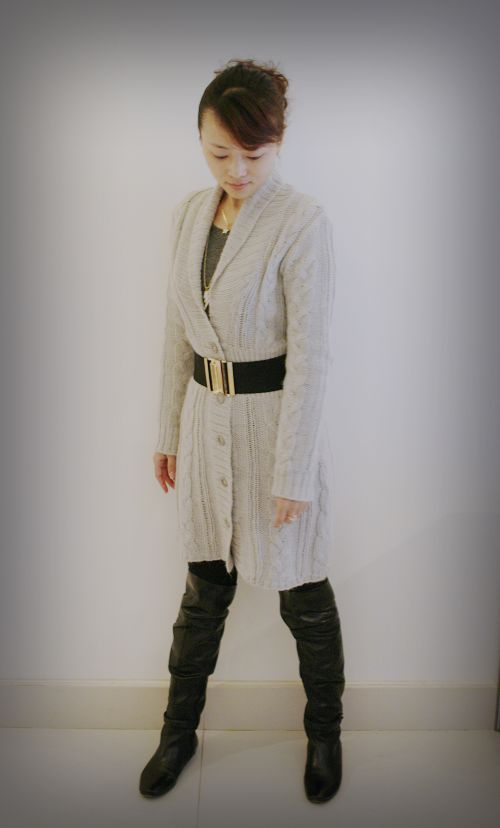
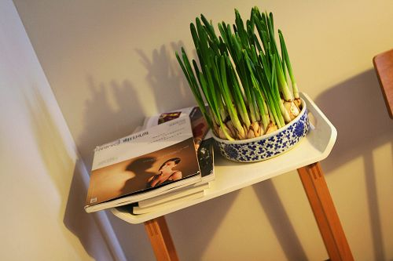
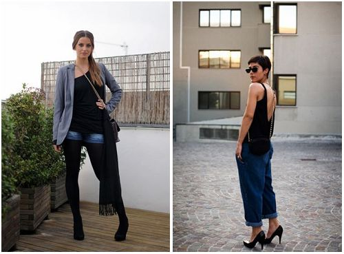
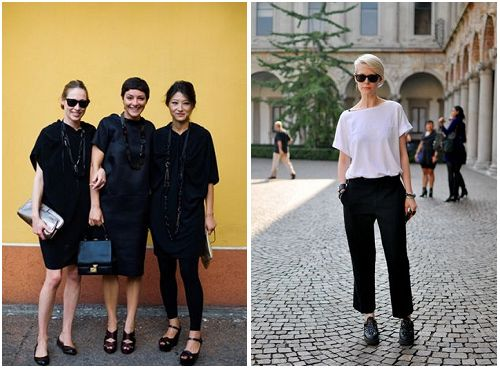
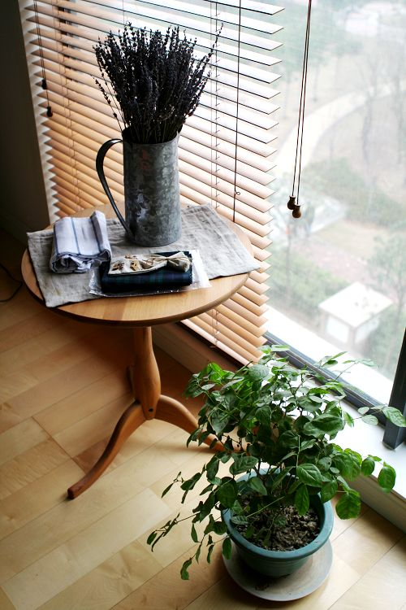

Dress Blog @ Feb 08, 2010
这双靴子实在太。。。平跟了。稍微有点小跟也好，不过走路很舒服，遗憾的是皮质太软，象我这样大步流星走路快的人，难免碰擦，鞋头已经伤痕累累。当时在德基买到它还是从外地调货的，最近在水游城的NIEWEST看到居然还有货，真是。。。


这双靴子实在太。。。平跟了。稍微有点小跟也好，不过走路很舒服，遗憾的是皮质太软，象我这样大步流星走路快的人，难免碰擦，鞋头已经伤痕累累。当时在德基买到它还是从外地调货的，最近在水游城的NIEWEST看到居然还有货，真是。。。
自从小原子无私教授奶茶秘籍之后，我紧锣密鼓地买回制作奶茶的原料和工具，不断尝试，一次比一次进步，最终做出可口的港式丝袜奶茶。以至于周末的早晨以及工作日的晚上，都会做奶茶来喝。还期望家里来客人，好当场做奶茶来招待他们。
做港式奶茶的锡兰拼配红茶、进口罐装淡奶以及拉袋一只，拉袋上的塑料拉链有一小截在反复练习中被火烧化，但不影响使用。如果没有拉袋，真的可以用现成的丝袜来煮茶哦~先前没有买到淡奶时，我就用光明牛奶来配茶，口感真的没有淡奶的丝滑感，不信可以自己尝试一下。
据说“锡兰拼配红茶”口感梢有些涩口，顶级锡兰红茶口感更好，等我尝过再作评判。现在拼配茶的口感我已很满足，至少能作出象模象样的港式奶茶喽。
从扑土店拎回红色搪瓷壶一只，在水游城4楼看到和扑土店差不多的搪瓷壶，要300元一只，颜色款式还没扑土店里的好看，里面更不是白色而是蓝色，贵在品牌附加值？

今天收到TB购买的袋装白糖。。。一大包，被分别装入各种密封罐里，小部分散落在竹篮子里备用，袋装糖用起来既体面又卫生。

以及韩国进口釉子茶一瓶，够春节期间食用的量，味道还不错。要把春节过得美美的，所以买了短绒沙发垫和椅垫，希望提高家中色彩的和谐度，有时间再搬回几盆植物，对了，IKEA目前有几款一色的花盆有相配的底盆，看中白色的那款，放在家中一定很好看。


以下为收集的各种奶茶制作方法，慢慢学习：
印度奶茶（Masala Chai）配方
原料：鲜牛奶300毫升、红茶12克、焦糖适量、豆蔻一粒、肉桂一小片、丁香二粒、鲜奶油一匙。
做法：焦糖放进奶锅，加少量的水煮至糖汁呈金黄色并冒出焦香味，到入鲜牛奶，不断搅拌，加红茶入锅煮沸后，加入香料，改用小火煮1分钟，然后放入奶油搅拌几下，再以小火煮约2分钟，过滤装杯。也可依照各人口味，添加少量的胡椒或巧克力酱。
杏仁奶茶做法
原料：杏仁100克、牛奶200毫升、白糖适量。
制作方法：
（1）把杏仁洗净在热水中浸泡10分钟后，去皮。
（2）用小石磨带水磨成杏仁汁（用多功能食品加工机则更好）然后用干净的纱布过滤，使杏仁汁流入碗中。
（3）把杏仁汁倒入锅中，加白糖、适量清水，用文火煮沸。
（4）把牛奶倒入煮沸的杏仁汁中，搅拌均匀，再次煮沸，晾凉后即可
麦香奶茶
材料 : 西米1/2杯，统一麦香奶茶。
做法:
1. 西米浸透，放入滚水中者至透明，隔去水分，待用。
2. 将麦香奶茶冰冻待用。
3. 将冻茶放入杯中，加入煮熟的西米，饮用时拌匀即成。
坚果奶茶
做法：
1、将茶叶、清水、一茶匙的坚果切片放进锅中去煮，再加入占20%的牛奶。
2、粗砂糖与坚果奶茶非常适合，可以当作甜味调料加进锅中。加入奶油之后，在撒上坚果切片。
3、坚果之外，近来也有以花生或核桃来代用。
香蕉奶茶
做法：将香蕉切片，宽约4mm，并把统一巧克力奶茶及一人份二、三片的香蕉切片放进锅中冲泡。
注意：
沸腾过度容易使味道尽失。可依喜好略加些砂糖，然后淋上奶油、放入装饰用的香蕉。为了不使装饰用的香蕉马上沉入红茶中，其诀窍就是将香蕉切成薄片使之浮起来。
暖姜奶茶
做法：
1、将茶叶与磨碎的生姜放入锅中，以清水浸泡。茶叶泡开了之后，加入与清水同量的牛奶并加温。
2、倒入茶壶之后，注入预先温热的茶杯中，并切宽约1~2mm的生姜片装饰茶杯，便完成了。
玫瑰奶茶
玫瑰果是野玫瑰的果实。它的维他命C的含量是柳橙的20倍，柠檬的60倍。这道玫瑰果奶茶具有提高肝脏功能的效果。适口的酸味加上蜂蜜的甜味，非常好喝。
做法：
用玫瑰果茶包泡茶；在锅中放入200CC牛奶温热，将茶倒入再加热。在奶茶快沸腾前熄火，可按个人喜好酌量加入蜂蜜。
珍珠奶茶制作方法：
1、雪克杯中倒入一咖啡勺调匀奶茶粉、1勺半果糖、加入三分之一杯热开水，用搅拌棒或咖啡勺调匀，再加满冰块，急速摇动雪克杯20次后，倒入放有珍珠20g的杯中即可。
2、雪克杯中倒入一咖啡勺奶精，一勺半果糖、加40g热水调匀后，加入二分之一杯红茶水（锡兰红茶、麦香红茶、咖啡红茶均可）再加满冰块，急速晃动雪克杯20次后，倒入盛有珍珠20g的杯中即可。
注：制作果味珍珠奶茶方法同上，只需再杯中加添果粉2勺。（根据所添加果粉不同可分别制作成木瓜珍珠奶茶、香芋珍珠奶茶等。）
不知道从什么时候开始喜欢上金色饰品，审美的转变也是经历了若干年只选择银色和秀气的设计。金色搭配恰当，能立刻为平常衣装增添大气，前提是品质一定要好。我无法让自己穿成shopping girl或参加某个show的摸样去工作场合，但稍作打扮也是对繁忙工作的一种平衡。对，你的环境也决定了你的穿衣倾向。昨天看到一个穿着迷彩裤的女孩子从电梯前一闪而过，即使美，未免与场合不搭。
山树觉得咖啡色和咸菜色会让人增龄不少，可能真和年龄有关，到了一定年龄原先不能接受的色彩现在却能渐渐让人喜爱。那么，不用急，让我们慢慢享受7色世界，就象享受每个年龄段带来的不同感受。审美，也需要时间来慢慢培养。
亦舒：女人穿得好，不外是天职，男人注意服装，则带来意外的惊喜。
（过于注重打扮的男人，一丝不苟，油头粉面，这个T那个衫讲起来头头是道，这样的男人应该直接变性为女人。）



1、请先通过E-MAIL、FAX与Hans（男主人）预定房间，要么直接打个电话过去也行，Hans有个办公室，每天在那里工作；
2、ZURICH火车总站有个售卖国内火车票的柜台，购买“联票”（包含火车+汽车），注意票上显示的“到达时间及下班车启程时间”以及站台，中转时间不过几分钟，但肯定够你中转。ZURICH到达旅馆不会超过3小时，事先与Hans联系好，让他在车站接你，并且给你些建议，通过邮件交流会更具体。
或者在北京直接购买瑞士国内火车联票，前提是你准备在瑞士海游的话，如果仅仅小范围逛逛，可以不选择这种联票。当然手持联票可以乘船乘汽车，省去动脑筋研究自动售票机操作问题，偏远地方几乎没有英文操作指示（或许整个瑞士英文指示就不多）。除非你会德语，不然需要求助年轻的路人甲乙。
3、从旅馆到瑞士最远的城市，最多三小时左右，一般在1-2小时单程时间。建议早晨出去玩，晚上回旅馆。THUN湖还是不错的，可以延湖下到各个小镇上逛逛，一天时间比较紧，必须早点出发。
建议晚归时随身带个小手电筒，山上没有路灯，但路况绝对好。在瑞士走走挺惬意，所以务必穿双舒适的鞋适合长时间行走很重要。有些细节我回家找找资料，尽量多提供一些给你。代我向RUTH和HANS夫妇问好哦~
Website：www.berghaus-eggiwil.ch
Tel:++41/+34/491 2368
Fax:++41/+34/491 2375
E-MAIL:berghaus@eggiwil.cn
Berghaus Eggiwil （1）
Berghaus Eggiwil （2）
Berghaus Eggiwil （3）
Berghaus Eggiwil （4）
三个黑色一个红色收纳盒，买回家很久都没有安装起来使用，晚上花了一个多小时收拾书架，把琐碎的物件都放进收纳盒，避免凌乱。得意于当时对于尺寸的把握，每个收纳盒放在书架最底层真正好，如果四只收纳盒都是黑色会更整洁。
下一步收拾客厅，用不上的东西坚决扔、扔、扔！
否则会象老年人的家一样，杂物越来越多。
不仅因为这件中长外套的设计，还喜欢它的咸菜色。下面配靴子，外面加件羽绒服或大衣，到办公室穿着它温度正好。天气好些，完全可以穿出七分袖的效果。


提前两天去万达影院买《Avatar》3D双机的电影票，上映半个月，买票还是要排队。三条黑压压的队伍周围也是人，人多嘈杂的场合的确有些不适，那些与他人身体没有礼貌距离的讨厌鬼。。。还是有滴。已经排队了，不知道急个什么劲儿？
看3D电影的理想位置在8、9、10排的中间，双机只有晚上7：30和10：40两个时间段，只好买了10：40分的，以为会看到凌晨1点半，结果提前一刻钟结束。
没有传闻中的眩晕感，即使我架着两副眼镜，电影真好看！但3D效果不明显，象看立体画。故事情节没什么新意，可是那么赋有想象力的各种形象和电脑技术趋于完美的表现，着实震撼了我。原始社会真好，活得自在，人性淳朴，世界都是被欲望强大的人给糟蹋了。正义最终战胜邪恶，不过是理想主义。这部片咱中国的房地产开放商、ZF拆迁办官员看了会是什么感受？这问题其实也没必要想，所谓在其位谋其职，接受不了也不会干这个了。
导演“詹姆斯.卡梅隆”都是大手笔制作，之前的《泰坦尼克号》，《终结者》。。。演员都不是大牌，电脑特技制作投入都很大。不过昨天听到新闻里讲他并没有获得美国导演协会提名的最佳导演奖，一般获得该奖的人，接下来会毫无悬念获得奥斯卡导演奖。
友人跑去无锡看的IMAX，据说上海的IMAX黑市卖到450一张票。南京的3D双机票价是120元，周二周三晚上也没有折扣。希望南京不久的将来能出现真正的动感影院看3D电影，有风的时候观众脸上能感觉到风，电影里下雨时观众能感受到雨飘在脸上，座位能跟着电影剧情摇晃震动，这才是真正感受3D电影的奇妙。当然前提是，得有象《Avatar》这样的作品让你看！
转一下工科男Wanze先生看完后的困惑，如下--
1、影片最后女主角的情感转变告诉我们找女人，男人的坐骑很重要啊。她的心理是这样的：你能骑魅影，你就能骑我；翻译成地球话，就是：你能开宝马，你就能开我。
2、有个发现，纳威人不养狗。森林里六条腿的野狗不少，但显然还没有完成驯化进程。为什么森林里的动物都是六条腿，纳威人却是四肢而不是六肢？看来他们不是由那些低等动物进化来的，达尔文理论在潘多拉失效鸟。或者，纳威人其实也是外星移民？
3、看到了男主角肉身的身残志坚，看到了男主角那条乌黑的麻花辫，看到了星星点灯的潘多拉夜景，我不由想起了他——郑智化！
昨天睡得挺晚，下雨时又回到市区买碟、吃饭。可是完全没有食欲，中午在问问家吃了两碗饭，包销了盘子里所有的咸蛋黄豇豆。太多快餐+快餐的工作日，遇到一顿家庭餐怎么也要多吃上一碗呐。
周日早晨破天荒9点多钟起床，在围脖上和众女友韶韶，磨蹭到下午去银行、加油、买食品。。。今天最重要的安排是晚上的阿凡达，在去影院之前我是不是要睡一会儿？酝酿下情绪，精精神神坐在电影院里观看据说有晕车感的3D电影？
在洪晃博上看到“low maintenance”这个词儿，觉得自己越来越接近这种状态。上周五有个同事说：“这周看你天天穿这身衣服，都没换过。”是啊，人一旦忙起来，哪有功夫考虑这些，头发也是到了不能不洗了才清洁一下。
可是当我看到问问家长势旺盛的水仙花，想着过段时间就会开出漂亮的花朵，或许那时候正好是春节。。。我那家中一片惨淡光景，唯有滴水观音在苟延残喘。low maintenance可以，但粗糙的生活还是尽量避免掉。于是今天卯足劲儿购入新床品一套，门厅垫一只，以及制作港式奶茶的锡兰红茶和拉袋。春节前，需要收拾一下书房和衣帽间，还要赶在节前用买回已久的零布头给两狗狗做个漂亮的垫子，毕竟是过年啊。




在户外拍这朵散发芬芳的腊梅，它的枝干时常被寒风吹得颤动起来，黄色的小花给冬季带来温暖的期盼。

昨晚问问更新blog，四次都没有成功。检查时误删整篇文字，心碎的同时感叹大巴真如惊弓之鸟，难怪大巴的CEO被媒体称为“忧伤的年轻人”，究竟是什么字导致博客不能更新？今天上围脖才知，在问问凌晨反复尝试下，原来“死”、“被打死”成为被禁的罪魁祸首。好吧，现在大巴用户和大巴的读者也要跟着一块儿忧伤了！
——四次被禁的《在一起》，转自问问博客——
一只叫土豆的狗。
脏兮兮的出现在我家近的宠物店里，它生过N胎，两次剖腹产，耳朵被剪（为了美观），声带被割，犬牙也被磨成平的。它5岁了，生到不能生，子宫就被摘掉，然后就被丢弃到店里。
如果要为不公平的事情生气，得要生到什么时候？
即便对弱小的生命体抱有同情，我也时刻叮嘱自己要克制。因为克制自己的情绪和感情，也是一个人在社会上的生存之道。但愿我妈给我的情感量能够轻一些，可社会待我又不至于坏到什么地步，朋友多半有情有义，对于不幸的事情，我们心里明白，以微薄已力，大多数时候也只能做个旁观者。
K爷是我一年多前在垃圾堆边捡来的狗。当时它和一只母狗玩。母狗不愿跟我回家吃饭。一个礼拜后，这只叫小花的母狗在院子里被送去了西天。 我难受，也为在我家吃得皮毛贼亮的K爷感到庆幸。它与死亡擦边，自己的初恋也已结束。而浑然不知人世险恶，也是身为狗的幸福啊。
天气很好的下午，我和路边狗土豆一起玩，我唤：“土豆~！”它颠颠跑来，深深望着。它有一副好脾气，一个肥屁股，一把乱胡须，一双黑葡萄似的眼睛。和任何人都不闹别扭，它不是被宠大的孩子，温和之下自有一股生存的韧劲。
我没有办法养它，我对于它，就是一位平凡的路人而已。
若干日后，土豆被朋友茶收养。在我俩对上号之前，她也不知道土豆狗曾经和我玩耍。我想呢，人和人，和动物之间存在着潜伏的网络。和什么样的人成为朋友，和什么样的动物为伴，貌似都有安排，我们不过排队走入进程而已。生离死别要发生，重逢也终有时，各位不必过于忧虑。
据说土豆患有严重的分离焦虑症。我一度怀疑急性子茶会把它送还店里，即便如此我也不怪她，因为适应一只狗比经历恋爱困难得多，至少谈不拢的情人不会在你家四处撒尿和乱咬鞋子……但是她熬过来了，土豆症状减轻。我为自己低俗的判断感到无地自容。
今日家宴，我见到了温顺土豆。它深邃、粘人、一往情深。我知道它找到了归宿。看着这中年横福的家伙，我真心为它高兴！
深邃、粘人、一往情深的土豆。

在家常常做饭的人应该了解，准备这一桌饭菜不容易。兰质蕙心的问问在上周五晚上准备好净菜，等我们快到的时候开始烧。有肉骨茶、豆腐鸡蛋羹、韭菜炒淡菜、咸蛋黄豇豆、板栗炖小鸡、爆炒猪肝、南京农村香肠，我最爱吃她做的豆腐鸡蛋羹、韭菜炒淡菜、咸蛋黄豇豆、。她最得意的肉骨茶，俺生生没得尝到，都吃得狼吞虎咽唉~

温柔在一起的问问和土豆。

谁敢挡在怪大叔“外外”与食物之间，怪大叔可是要发火的哦！

有爱的小原子亲手制作的披萨，两种口味：培根芝士和蘑菇花菜。

这把白色的小茶壶我也爱。

两个小朋友抢糖吃。

香香滴卡通土豆，被所有阿姨抱了个遍，真是受宠若惊的一天。

圆桌上的铁皮桶和插着的薰衣草来自扑土的IN CAFE，小原子连夜手工赶制的米色香袋我也有一个，等天晴时拍照，一定要看看上面那些特别的纽扣，太有爱了~
